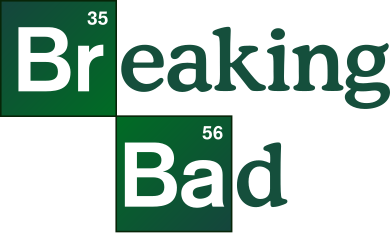
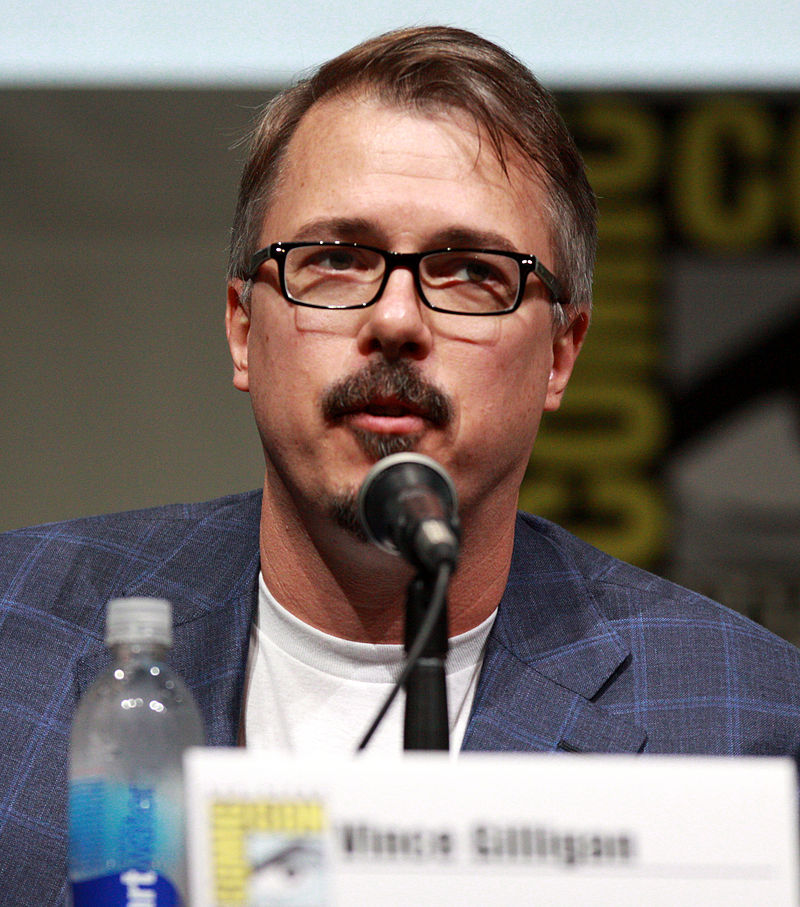

Сериал "Во все тяжкие"
Логотип сериала

Американская телевизионная криминальная драма, премьерные серии которой транслировались с 20 января 2008 года по 29 сентября 2013 года по кабельному каналу AMC
Создатель Сериала Винс Гиллиган

Создателем и шоураннером сериала стал Винс Гиллиган. Его первой телевизионной работой было участие в создании «Секретных материалов», для которых он написал сценарии к 29 эпизодам и участвовал в продюсировании более ста серий. Приступая к новому проекту, Гиллиган планировал создать сериал, в котором протагонист по мере развития сюжета становится антагонистом
Актёрский каст состоял из:
- Брайан Крэнстон
- Аарон Пол
- Дин Норрис
- Джанкарло Эспозито
Награды:
За время своего вещания, сериал, помимо любви зрителей и критиков завоевал такие награды, как:
- Награда "Эмми"
- Два золотых глобуса
- Пять премий Гильдии киноактёров США
- Шесть премий Гильдии сценаристов США и многие другие